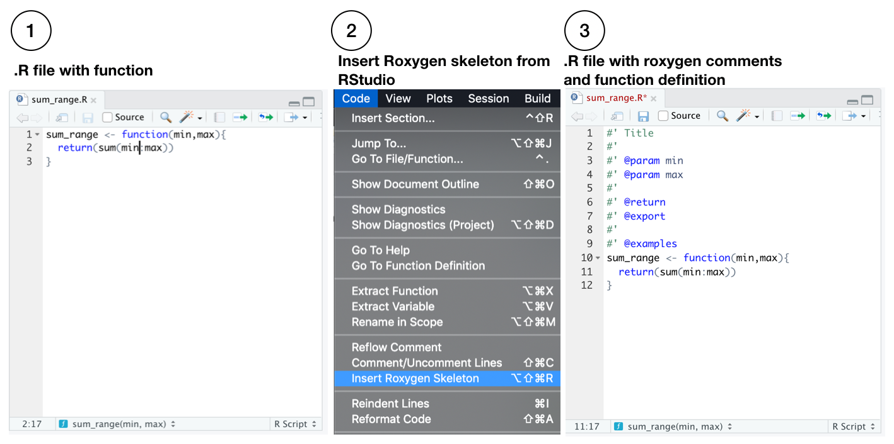

Get started using vertical
get_started.RmdMotivation
vertical is an R-based structured workflow for creating and sharing resarch assets in the form of an extended R package. There are several reasons why the R package format is useful for sharing a variety of research assets (from experiment scripts, to papers, slides and posters).
- R packages have a standardized and well-organized file-structure that is useful for organizational purposes.
- Researchers often develop custom functions for analysis, and putting them in an R package makes sharing the functions easy.
- R packages can include data from a research project, and a natural way to document the data using the same schemes for documenting R functions.
- R packages include various documents through the vignettes folder, which in principle could include various formats for communicating research, such as a manuscript or slide deck written in RMarkdown.
- R packages can be automatically rendered into websites through
pkgdown, providing a compelling format for sharing research assets.
Install vertical
vertical requires an installation of devtools
install.packages("devtools")Then, run the following to install vertical.
devtools::install_github("CrumpLab/vertical")Overview
Vertical is the benefit of combining two ecosystems for creating and sharing and sharing research project assets, these include the ecosystems of R Markdown and R packages. So vertical is:
R Markdown is a plain text document format that 1) allows regular text to be combined with chunks of code, and 2) can be compiled to numerous output formats, such as .pdf and webpages (HTML). R Markdown offers a strategy for transparent and reproducible research because analysis scripts, along with their output (e.g., results and figures), can be embedded directly in a document. R Markdown has become a large ecosystem and is capable of several forms of document creation, from journal articles, to posters and slide-decks, and much more. In general, if R Markdown is used to create a research asset, it can be included in a vertical project with ease. A comprehensive manual for all things R Markdown (Xie, Allaire, and Grolemund 2018) is available here https://bookdown.org/yihui/rmarkdown/.
R Packages are a standard for creating and sharing libraries of R functions. By default, R packages can also include data and R Markdown documents, so the format is already suitable for packaging common research assets such as custom functions, data, and manuscripts. R Packages are an ecosystem in that several R Packages exist to facilitate the process of creating and sharing R packages, such as usethis (Wickham and Bryan 2019), pkgdown (Wickham and Hesselberth 2019), and devtools (Wickham, Hester, and Chang 2019). Furthermore, pkgdown provides a method to automatically render an R package into a website that displays function documentation as well as R Markdown documents (typically tutorials for using the package). We refer readers to Wickham (2015) for an authoritative and in-depth guide on creating R packages http://r-pkgs.had.co.nz.
vertical is a template for extending R Packages and pkgdown websites to include room for additional assets common to psychological research projects. To appreciate the extension consider the basic skeleton for building an R package that is generated by RStudio.

In the minimal example, RStudio is used to create a new project by choosing the R package template. The new project is populated with DESCRIPTION and NAMESPACE files, an R folder to write .R functions, and a man folder to write .Rd files for function documentation. RStudio automatically recognizes the project as an R package, and provides a build tab in the IDE to install the package. A pkgdown website can be built by one command pkgdown::build_site().
vertical workflow
Installing the vertical package adds a new project template to RStudio (note RStudio should be restarted after vertical is installed so that it recognizes the template). Users can initiate a new vertical project from RStudio by choosing the vertical project option when creating a new project. By default a vertical project is structured in the following manner:

The new project contains a more complete skeleton of an R package (e.g., folders for data-raw, data, and vignettes), _pkgdown.yml for controlling website parameters when rendered with pkgdown, and additional folders for research project assets such as experiments, manuscript, model, posters, and slides. These additional folder can simply be locations to store final products (e.g., a .zip file for experiment scripts, a .pdf for the manuscript, powerpoint for the slides,e tc.); however, each of these assets can also be created as R Markdown documents. So, by default vertical includes R Markdown templates from other packages within each folder for building each type of content. As a result, vertical suggests using R as a single-platform solution stack for research asset creation.
vertical website
A major impetus behind vertical is to facilitate sharing of research assets. For example, the benefit of using a vertical workflow is that a website presenting all of the research assets can be automatically rendered through pkgdown. For example, the figure below shows a vertical project website, with example page content shown in the boxes.

Once content has been created in each of the folders, or a subset of them, the website can be rendered in one call using vertical::build_vertical().
Depending on the nature of the research project, a vertical website is capable of sharing several assets. At a minimum, the landing page can be used to overview the research project. The navigiation bar can be used to download a .pdf of the manuscript, as well as posters and slides. Supplementary materials can be written in R markdown and displayed directly on the website. Similarly, model code and supplementary data analyses can be included directly on the website. If the project includes as a browser-based behavioral experiment, in addition to sharing the source code for the experiment, a demonstration of the experiment can be run directly from the website. Finally, because a vertical website is powered by pkgdown, the website provides pages for R functions and data documentation.
Tutorial
The following tutorial on vertical describes the creation of a vertical project, discussion of the vertical workflow for various types of content creations, rendering a vertical project website, and sharing vertical projects on Github and OSF. We attempt simple examples in each case, and refer readers to other guides for more in depth treatment when necessary.
Creating a vertical project
Install vertical, restart RStudio, then follow these steps to initialize a new vertical project.

Default vertical template
By default, a fresh vertical project contains the following files and folder structure:

Building the vertical website
A new vertical project is populated with template examples for every kind of content supported by vertical (e.g., R functions, manuscript, poster, slides, supplementary materials, and even writing a browser-based behavioral experiment with jspsych). As a result, an example vertical website (showing templated content) can be rendered immediately by running the following in the console:
vertical::build_vertical()The above line should save the HTML files for the website into the docs folder in the vertical template. Additionally, the resulting website should appear in a browser window for inspection. For expanded discussion on customizing the website see the Website customization section.
One caveat is the rendering of APA manuscripts with the papaja package, which requires a latex installation. More generally, when vertical is installed, it installs dependencies such as papaja and other required packages, but does not install latex (see, APA papers with papaja).
R Packages
vertical projects can include an R package containing custom functions and data sets. This tutorial presents minimal examples for R package creation, and users interested in this functionality should consult Wickham’s guide for creating R packages http://r-pkgs.had.co.nz.
We suggest avoiding a manual style for R package creation, which involves creating and modifying critical R package files by hand. Specifically, manual creation of files requires intimate familiarity with R standards for package development, which new users may not posess. Instead, we suggest users avail themselves of helper packages such as usethis, pkgdown, devtools, and roxygen2 for documenting functions and data. We note that Wickham’s guide provides in depth tutorials about R package creation using these tools.
To encourage the above method for R package creation, the vertical template also provides Vertical Helper.R, which contains example commands from the above packages for automating aspects of package creation.
R package meta data
vertical creates a template for R package creation, including a DESCRIPTION file that is used to provide metadata about the R package. The default DESCRIPTION file looks something like this, and should be modified by the user to change the name, title, description and so on.
Package: verticaltemplate
Title: What the Package Does (One Line, Title Case)
Version: 0.0.0.9000
Authors@R:
person(given = "Matt",
family = "Crump",
role = c("aut", "cre"),
email = "mcrump@brooklyn.cuny.edu",
comment = c(ORCID = "0000-0002-5612-0090"))
Description: What the package does (one paragraph).
License: MIT + file LICENSE
Encoding: UTF-8
LazyData: true
Suggests:
rmarkdownThe Wickham guide discusses the role of the DESCRIPTION file in depth here: http://r-pkgs.had.co.nz/description.html. It is possible, through usethis, to set up defaults that autopopulate the DESCRIPTION with user information (for example, see usethis setup).
Adding R functions
The following is an example of adding a new function to the R package in a vertical project. Some reminders of these steps are suggested in Vertical Helper.R.
New functions are added as .R files to the R folder. This can be automated by the following, which creates a new .R file inside the R folder, in this case with the name myfunction.R.
# replace myfunction with your function name
usethis::use_r("myfunction")In this example, we will write a function that sums the integers between a first and second example. To begin, we decide to name the function sum_range, and create the .R file by running:
usethis::use_r("sum_range")Next, the function is written in the newly created file sum_range.R. For example, the following is added, starting on line 1:
We will use roxygen2 style commenting to provide documentation for the function. The documention will be shown in the help menu when the package is installed, allow help for the function to be accessed from the console by ?sum_range, and produce a webpage with the documentation when rendered by pkgdown. The alternative to roxygen2 is to manually write an .Rd file in the man folder for the new function; roxygen2 automates this process and allows the documentation to be added as comments in the .R file defining the function.
Make sure roxygen2 is installed (using RStudio, or install.packages('roxygen2') from the console.). RStudio may need to restart to recognize roxygen2. Before proceeding activate roxygen2 documentation in RStudio, under Tools > Project options…, and select the checkbox for roxygen documentation:

Next, a template for roxygen2 comments can be automatically generated from within the .R file using the following steps:

A guide for documenting functions with roxygen2 is available here http://r-pkgs.had.co.nz/man.html. In our example, we modify the roxygen2 skeleton like so:
#' Sum of an integer range
#'
#' @param min integer, a starting value
#' @param max integer, an ending value
#'
#' @return integer, the sum of the integers between min and max.
#' @export
#'
#' @examples
#' sum_range(min=1,max=10)
sum_range <- function(min,max){
return(sum(min:max))
}The last step is generate the .Rd file in the man folder, which is used to create the documentation. The .Rd file is generated automatically by devtools::document(), or by the RStudio macro Ctrl/Cmd + Shift + D. For example, a new sum_range.Rd file like the following is saved to the man folder. This should not be edited by hand.

R package compilation
At this stage we have added a new R function to the R package skeleton, but have not yet compiled and installed the R package. The R package can be built and installed in one step by pressing “Install and Restart” from the Build tab in RStudio. After this step, the package is installed on the local system, it will be shown in the list of packages along with constituent function documentation. The functions in the package can be loaded using the library() command.

Relatedly, pkgdown can be used at this point to render the function documentation to the website by pkgdown::build_site().

Adding Data
Arbitary data can be included in an R Pacakge by placing R data files into a data folder. Importantly, data can be documented just like a function, which allows for clear and descriptive meta-data for the data object.
vertical does not create a data folder as a part of its template. This is to encourage useful strategies for data inclusion, which also automate the creation of the data folder when it is required. We begin with an example of including data from the R environment, and then discuss strategies for including data as a part of a reproducible research project.
R objects in the environment can be included as data in an R package. For example, the following generates a simple data frame in the R environment:
mydf <- data.frame(a = 1:5,
b = 6:10,
c = c("A","B","C","D","E"))The mydf data frame can be exported to an .Rda file and written to the data folder through usethis:
usethis::use_data(mydf)The above also creates the data folder if it does not already exist.
Next, documentation for the data is added by inlcuding a data.R file in the R folder.
usethis::use_r('data')Finally, roxygen2 comments are added to data.R to describe the data file. We recommend installing the sinew package which can generate a useful template for documenting R data objects.
library(sinew)
makeOxygen(mydf)For example, the above generates the following template that can be copied copied to data.R.
#' @title DATASET_TITLE
#' @description DATASET_DESCRIPTION
#' @format A data frame with 5 rows and 3 variables:
#' \describe{
#' \item{\code{a}}{integer COLUMN_DESCRIPTION}
#' \item{\code{b}}{integer COLUMN_DESCRIPTION}
#' \item{\code{c}}{integer COLUMN_DESCRIPTION}
#'}
#' @details DETAILS
"mydf"The template is then edited to describe the data object, such as:
#' @title mydf
#' @description example data frame
#' @format A data frame with 5 rows and 3 variables:
#' \describe{
#' \item{\code{a}}{integer some numbers}
#' \item{\code{b}}{integer some more numbers}
#' \item{\code{c}}{character some letters}
#'}
#' @details This dataset is an example.
"mydf"Finally, the .Rd file is generated by devtools::document(), or by the RStudio macro Ctrl/Cmd + Shift + D. When the package is built it will now contain the included data and documentation for the data. The documentation will be added to the website when the site is rebuilt.
Importantly, whenever the package is loaded (e.g., library(verticaltemplate)), the included data becomes available just like the included functions. For example, the following would load the package, then load the included dataset to the environment.
library(verticaltemplate)
mydf #loaded into environment from packageWe have discussed the operations for adding data to an R package. In the context of including data from a research projec we have a few additional suggestions. vertival does create a data-raw folder as part of the template. This is a location to place raw data in any given format that can imported to R, such as a .csv file, excel file, JSON file, SPSS file, or other file type.
It is very often the case that raw data must be pre-processed or wrangled from its raw form to another form required by functions for data-analysis. Pre-processing steps may also involve excluding aspects of the raw dat, or imputing structure to the raw data. In the spirit of sharing reproducible research it is important to record and make transparent all pre-processing steps. In principle, the transformations of data along an analysis path can be preserved in a variety of locations, such as in R Markdown documents that contain the scripts for the transformation. vertical suggests that the data-raw is used a location to 1) declare and conduct pre-processing steps, and 2) save the transformed raw data to the data folder if the intention is to include it in the R package.
For example, the data-raw folder contains DATASET.R, a mostly blank .R script. This script can be populated the code necessary to import the raw data, and transform it as needed to a desired form for further analysis. In other words, DATASET.R a script that declares pre-processing steps. The script can also include usethis commands and sinew commands to output desired R objects to the data folder, and to write documentation for these objects. One benefit to this strategy is that transformed data (ready-for-analysis), can later be accessed by loading the package as a library. For example, R Markdown assets for writing a manuscript, poster, or slide deck that include data-analysis, can quickly load the data by calling the library.
APA papers with papaja
APA-style manuscripts can be written in R Markdown using the fantastic papaja package (Aust and Barth 2018). The linked to documentation explains how to use papaja, and rather than repeat that information here, we briefly extol some virtures of papaja.
vertical includes a papaja template in the manuscript folder. Knitting the manuscript.Rmd in RStudio produces an APA-style manuscript as a .pdf. NOTE, a latex installation is required in order to knit to pdf, and see the papaja documentation for suggestions on installing latex (see also the tinytex R package which may be of some use for navigating latex installation issues. vertical also includes the resulting .pdf in its website as a downloadable file.
There are several benefits to using papaja. First, it is possible to create an entirely reproducible research manuscript. For example, all of the text, and R code for data-analysis, modeling, and figure generation, can be included in the .Rmd file. Second, papapja includes many helpful functions (such as apa_print()) for automating the writing of results from an R object (e.g., the results of an ANOVA, t-test, or regression) to the manuscript. Third, papaja uses latex style citations which automatically create bibliographies. Finally, it is possible to export to latex and word documents (which may need some formatting by hand at the end). Finally, papaja also has convenient templates for responding to action letters during the review process.
Posters and slide decks
R Markdown is a powerful document creation platform and can also be used to produce posters and slide decks that are common formats for communicating findings at conferences or seminars. vertical allows posters and slides to be included as part of the vertical project website. Furthermore, if vertical suggests templates for creating these assets in R Markdown. For example, the posters folder includes a posterdown template (Thorne 2019), and the slides folder includes a slidy template. Both produce browser-displayable content that can be included in the vertical website. The respective links point to documentation for making posters with posterdown and making slide decks with slidy. Additionally, the posters and slides folders can be populated with other templates (by the user) if other packages are preferred for making posters and slides in R markdown.
Supplementary materials, model code, and arbitary R Markdown
R Markdown documents of almost any sort can be included in a vertical project. For example, supplementary materials and model code can be additional assets from a research project that can be included and shared.
vertical relies on pkgdown to generate its website, and pkgdown automatically knits .Rmd files located in the vignettes folder, and displays them under an articles tab. vertical renames the articles tab to “supplementary materials”, but the logic is the same. Arbitrary R Markdown documents for any purpose can be placed in the vignettes folder, and they will automatically be added to the supplementary materials tab on the vertical website.
vertical also includes a model folder as a location to place code from a computational model. This folder is populated with a default R Markdown template. The content in that document should be edited and replaced the content necessary to describe the model, and perhaps conduct sample simulations. However, pkgdown::build_site() does not scrape folders beyond vignettes when knitting R Markdown documents. Instead, vertical::build_vertical() is used to as a wrapper to pkgdown, which also knits content in non-vignette folders, such as manuscript, slides, posters, and model. We discuss further options for customization in the Website customization section.
Experiments with jspsych and jspsychr
Depending on the needs of the research project, it is also possible to create browser-ready behavioral experiments in RStudio. For example, vertical creates an experiments folder that contains a template for building experiments using the jspsych javascript library (De Leeuw 2015). Currently, vertical makes two suggestions. First, when a vertical project is created, it downloads the newest version of the jspsych library to the experiments folder. vertical also suggests a jspsychr template. jspsychr is an R package that provides templates and examples for writing jspsych experiments in RStudio, using a combination of R Markdown and javascript. The vertical template example includes a basic Stroop task. For example, knitting the index.Rmd file produces the index.html file which can be run in a browser. In this case, because the experiment file is also an HTML file, it is possible to include a demonstration of running the experiment in the vertical website.
References
Aust, Frederik, and Marius Barth. 2018. papaja: Create APA Manuscripts with R Markdown. https://github.com/crsh/papaja.
De Leeuw, Joshua R. 2015. “JsPsych: A Javascript Library for Creating Behavioral Experiments in a Web Browser.” Behavior Research Methods 47 (1): 1–12.
Thorne, W. Brent. 2019. Posterdown: An R Package Built to Generate Reproducible Conference Posters for the Academic and Professional World Where Powerpoint and Pages Just Won’t Cut It. https://github.com/brentthorne/posterdown.
Wickham, Hadley. 2015. R Packages: Organize, Test, Document, and Share Your Code. "O’Reilly Media, Inc.". http://r-pkgs.had.co.nz/.
Wickham, Hadley, and Jennifer Bryan. 2019. Usethis: Automate Package and Project Setup. https://CRAN.R-project.org/package=usethis.
Wickham, Hadley, and Jay Hesselberth. 2019. Pkgdown: Make Static Html Documentation for a Package. https://CRAN.R-project.org/package=pkgdown.
Wickham, Hadley, Jim Hester, and Winston Chang. 2019. Devtools: Tools to Make Developing R Packages Easier. https://CRAN.R-project.org/package=devtools.
Xie, Yihui, J. J. Allaire, and Garrett Grolemund. 2018. R Markdown: The Definitive Guide. Boca Raton, Florida: Chapman; Hall/CRC. https://bookdown.org/yihui/rmarkdown.